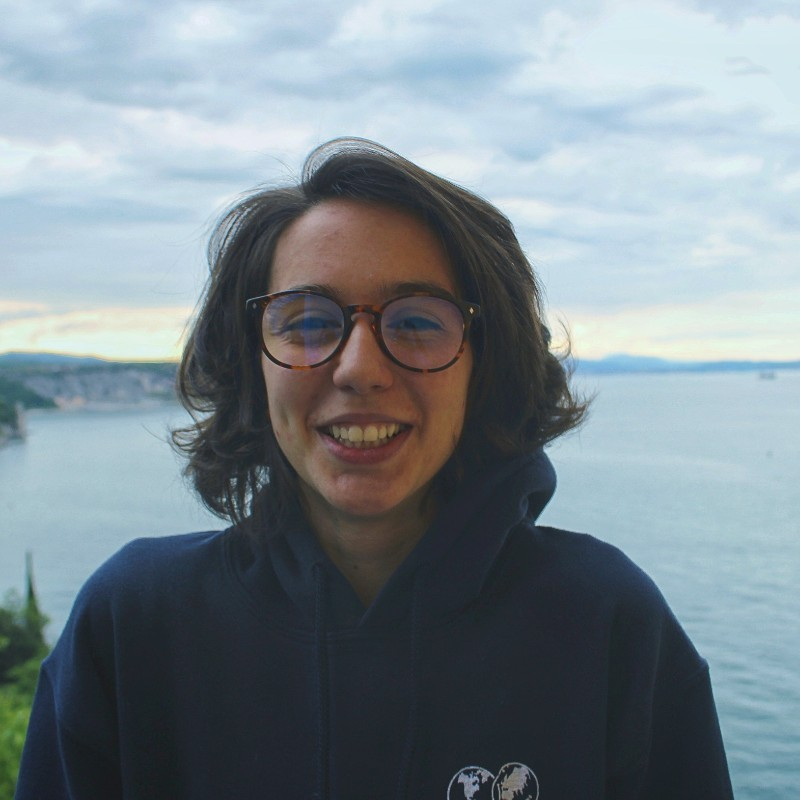

Seda is a result-driven and intellectually curious data scientist with a strong academic background in cell biology who is passionate about using rigorous, data-driven mathematical models and algorithms to synthesise actionable insights. She is keen to employ her pertinent analytical, software, and communication skills to deliver technical solutions through cutting-edge machine learning algorithms. Her quirk lies in her ability to digest complex problems, offer elegant data-driven solutions, persevere through failure, and communicate ideas creatively to diverse audiences.
EDUCATION
2019—2023 MSci Biological Sciences: Computational Biology University College London (UCL)Fist class / Distinction
Obtained strong analytic, software, and communication skills in Biology and Pharmaceutical contexts through the following modules:
- Research software engineering with Python
- Dynamic biological systems, Understanding bioinformatics resources and their application
- Advanced computational biology
- Advanced molecular cell biology
4th year MSci Extended Research Project (45 ECTS): Cytoskeletal actin remodelling at the immunological synapse: A quantitative comparison between T and CAR-T cells.
Host group: Simoncelli group at the London Centre for Nanotechnology, UCL.
Summary: Quantified cytoskeletal actin dynamics in cancer immunotherapy T cells from microscopy data; implemented an installable, semi-automated, documented Python pipeline/library (git).
- Data-lead interdisciplinary problem solving: using best practices in software engineering, created a documented tool; extracted biologically-relevant parameters from ~100 super-resolution microscopy images.
- Working in a cross-functional, interdisciplinary team: being proactive, innovative, and pragmatic, conducted an unprecedented comparison between primary and bioengineered cancer immunotherapy cells.
Host group: Lane Origins group, Genetics, Evolution, and Environment, UCL.
Summary: Implemented a stochastic kinetic model of protometabolic reactions in R; reviewed suitable mathematical modelling methods, extensions, and advanced frequentist and Bayesian parameter space exploration techniques (git).
- Adaptable, innovative and uninhibited problem-solving: research on the origin of life requires a very rigorous but also unhinged, daring, and creative approach to unique challenging problems.
2017—2019 International Baccalaureate (IB) Diploma United World College of the Adriatic
Bilingual diploma awarded with 43/45 points.
- Higher Level subjects: Chemistry (7), Biology (6), Russian Literature (7).
- Standard Level subjects: Mathematics (7), Global Politics (6), English B (7), Italian B (6) (certificate).
TECHNICAL SKILLS
Programming languages (example libraries):- Advanced: Python (numpy, scipy, pandas, scikit-learn, seaborn, openCV, pytest, requests, TensorFlow), R/RStudio (dplyr, tidyrtidyverse, ggplot2, shiny, pomp, GillespieSSA).
- Intermediate: MATLAB (Image Processing Toolbox), bash, SQL.
Analytical skills: frequentist and Bayesian statistical analysis, supervised machine learning, convolutional neural networks (CNNs), predictive modelling, big data analysis.
Software engineering: agile development, version control, deployment, testing, continuous integration.
LANGUAGE SKILLS
| Native | C2 | C1 |
|---|---|---|
| Turkish, Bulgarian | Russian, English | Italian |
PROFESSIONAL EXPERIENCE (TECHNICAL)
Computational researcher (summer intern) at the Randall Centre for Cell & Molecular Biophysics, King's College London (UK) Jun-Aug, 2022- Curiosity and self-drive: Obtained funding upon successful application for one of only 6 undergraduate summer studentships offered by the Royal Microscopical Society (RMS).
- Creative and analytic problem-solving: explored and implemented several different techniques of detecting lines in microscopy images and of quantifying biologically relevant parameters using Python (git), ranging from mathematical parametrisation to convolutional neural networks (CNNs).
- Oral and written communication: presented work to two other groups at the institute and published a report on the summer studentship in the infocus member magazine of the Royal Microscopical Society.
Data scientist (summer intern) at the Oxford Big Data Institute (remote / Oxford, UK) Jul-Sep, 2021
- Adaptability and perseverance: explored advanced deterministic and stochastic modelling techniques and R packages to model waning infection and vaccination immunity against SARS-CoV-2 (git); remained curious, driven, and flexible in the face of logistic and conceptual challenges.
- Understanding complex problems and developing analytical solutions: Processed, transformed, and integrated data from public repositories and peer-reviewed publications for further visualisation and analysis; tackled problems of combining large data sets from multiple sources (git).
- ONS safe researcher training course:completed a GDPR-compliant data privacy and security training to access ONS databases (Office for National Statistics).
PROFESSIONAL EXPERIENCE (TRANSFERABLE)
Online private tutor at Lanterna Education (remote, UK) Dec 2019-present- Strong communication skills: delivered 250+ hours of Maths, Chemistry, Biology (SL and HL) tutoring.
- Rapport-building with stakeholders: received retention bonuses for ~1/3 of students tutored rebooking tuition with me because they appreciated my individual approach, the accessible material delivery, while the parents valued my reliability.
PUBLICATIONS AND AWARDS
- Altenhoff AM, Train CM, Gilbert KJ, Mediratta I, Mendes de Farias T, Moi D, Nevers Y, Radoykova HS, Rossier V, Warwick Vesztrocy A, Glover NM, Dessimoz C. OMA orthology in 2021: website overhaul, conserved isoforms, ancestral gene order and more. Nucleic Acids Res. 2021 Jan 8;49(D1):D373-D379. doi: 10.1093/nar/gkaa1007.
- Culley S and Radoykova S. Using image processing to quantify biologically relevant information in microscopy imagesUsing image processing to quantify biologically relevant information in microscopy images. infocus Magazine. 2023 Mar 6, Issue 69.
- Harold and Olga Fox Award for best 3rd year MSci Investigative Project symposium presentation. 2022 Jul. Project title: Modelling the kinetics of protometabolism.